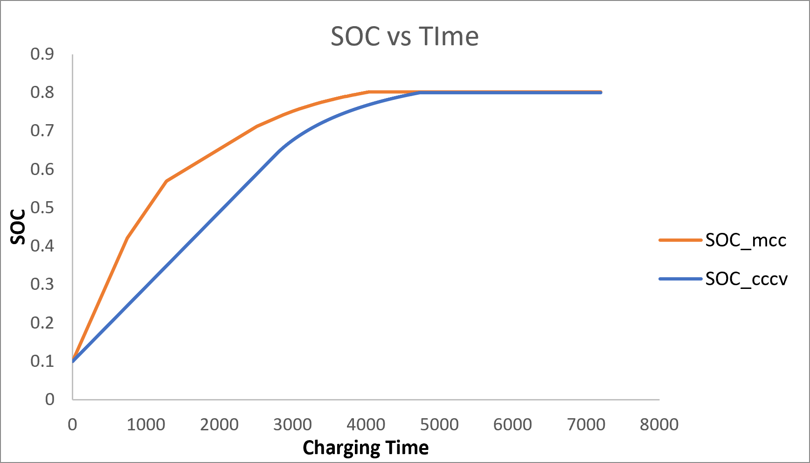
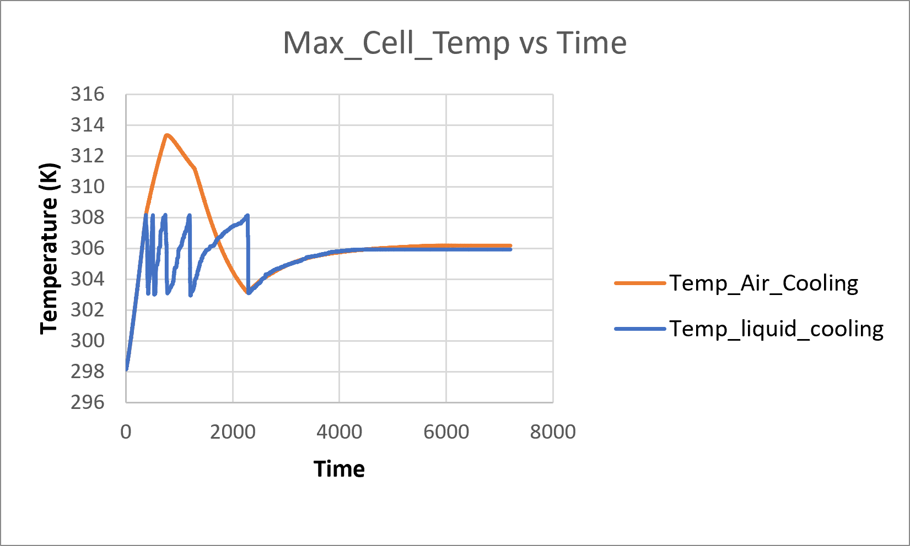

MCC Fast Charging with Thermal Management
A project journey exploring battery fast charging and cooling, through modeling, simulation, and a lot of debugging.
Why I started
Fast charging is one of the biggest pain points of electric vehicles — but charging too fast raises two real risks: pushing the voltage too high (damaging the cell) and generating too much heat (which can push a battery into thermal degradation or worse). I wanted to answer a simple question: can a smarter charging strategy charge a battery meaningfully faster than the standard method, without breaking either of those two limits — and how much does active cooling actually help while doing it?
What was I trying to understand?
The standard way to charge a lithium-ion battery is CC-CV — one constant current, then a slow taper once voltage hits the limit. It's simple, but it wastes a lot of time in that slow taper phase. I wanted to build a Multi-Stage Constant Current (MCC) charger instead — one that steps down through several current levels instead of tapering continuously — and see how much faster it actually charges a 4-cell pack, while staying inside a strict 4.20V and 60°C safety envelope. On top of that, I wanted to compare two cooling methods (air vs liquid) to see how much each one actually helps keep the pack safe during fast charging.
What I needed to learn first
- How lithium-ion batteries behave electrically — the 2RC equivalent circuit model, and why a battery needs two different time-constant terms (a fast one and a slow one) to accurately capture its voltage response.
- MATLAB, Simulink, and Simscape — specifically the Battery, Thermal, and Stateflow libraries, none of which I'd used together before.
- How to build a state machine (Stateflow) that can safely control current in real time based on live voltage feedback.
- How heat actually moves between battery cells sitting next to each other (conduction) versus how it moves out to the surrounding air or coolant (convection) — these are governed by very different physics and needed two separate types of blocks.
- How to debug a physics simulation when the numbers look wrong — learning to trust exported raw data over a scope screenshot, since scopes can visually hide real differences or make broken data look fine.
How I approached it
Built a 4-cell series-connected battery pack model, each cell using a 2RC equivalent circuit with SOC-dependent resistance and voltage tables. Designed an MCC controller as a 6-state Stateflow chart — four fixed current stages that step down every time voltage hits 4.20V, followed by a fifth stage using a small feedback loop to hold voltage right at the limit without crossing it.
Built a separate CC-CV model as the baseline to compare against, using the same voltage limit and current cap. Connected all four cells thermally, both to each other (conduction) and to the outside world (convection), and added a relay-based on/off controller to switch cooling on above 35°C and off below 30°C.
Tested three thermal configurations — no cooling, air cooling, and liquid cooling — by only changing the convection strength (h value) between runs.
How the project evolved
Most of the real work was debugging, not building:
- Early results showed all four cells sitting at exactly the same temperature. No matter what I changed, the temperatures stayed the same. I spent a long time checking the wiring before finding the real cause — a diagnostic sensor I'd added was, by its own defining equation, forcing two points to read equal temperature whenever it was placed alongside an existing connection instead of directly inside it.
- Found and fixed a wiring polarity mistake. One of the four cells was mirrored compared to the other three. It was still passing correct current through the loop, but its voltage and heat readings were subtly wrong because of it.
- A thermal reference block created another problem. A thermal reference block I added to fix one issue accidentally pinned the whole cell network to absolute zero instead of letting it float naturally. The fix was realizing that block should never be wired into the same path as the actual heat flow.
- The battery's charging curve appeared to get stuck at 86% state of charge. It stayed there no matter how long I ran the simulation. Exporting the raw current values instead of trusting the plot showed the current really had settled at a very small but nonzero value. This turned out to be real physics, not a bug: near full charge, the open-circuit voltage gets so close to the safety limit that only a trickle of current is sustainable.
- Realized the comparison was not fair. I was comparing the two charging methods to two different finish lines (99% vs 80%). That isn't a fair test, so I reran both methods to the same 80% target.
What I found


- MCC reached 80% state of charge about 12.5 minutes faster than standard CC-CV charging (3988s vs 4735s) — a ~16% time saving, at the exact same starting and ending charge level.
- Liquid cooling kept the pack's peak temperature about 5°C lower than air cooling (35.0°C vs 40.2°C) and did it with a noticeably tighter, faster correction pattern rather than one slow overshoot-and-recover swing.
- Without any active cooling at all, the pack's temperature climbed well past both of these. This confirmed that active cooling is genuinely necessary at this charging rate, not just a nice-to-have.
- The two cooling methods converged to almost the same temperature by the end of the charge. The real difference between them only shows up during the high-current early stages, when the most heat is being generated.
The biggest takeaways
- A scope or plot can visually hide a real problem — always cross-check with the actual exported numbers before trusting what a chart appears to show.
- When two sensor readings contradict each other, don't assume the model is broken — check whether the measurement tool itself is changing what it's measuring, especially with "ideal" sensors that have their own governing equations.
- A result that looks like a bug (charging suddenly grinding to a near-halt) can be genuine physics — the fix was understanding the electrochemistry well enough to tell the difference, not just re-tuning numbers until the plot looked nicer.
- Always define a fair, identical comparison point before comparing two methods — an unequal finish line quietly invalidates the whole comparison, even if both individual results are correct.